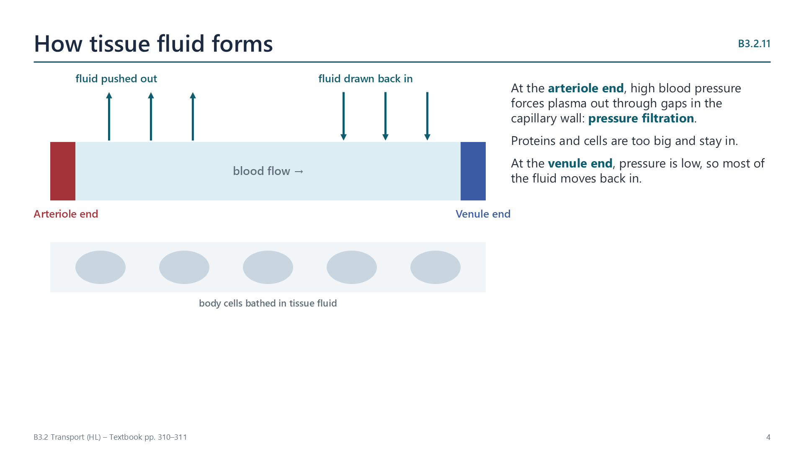

Tissue fluid
pp. 310–311
At the arteriole end, high blood pressure forces plasma out through gaps in the capillary wall (pressure filtration), leaving proteins and cells behind. At the venule end, blood pressure is lower than the osmotic pull of the plasma proteins, so most of the fluid drains back in.